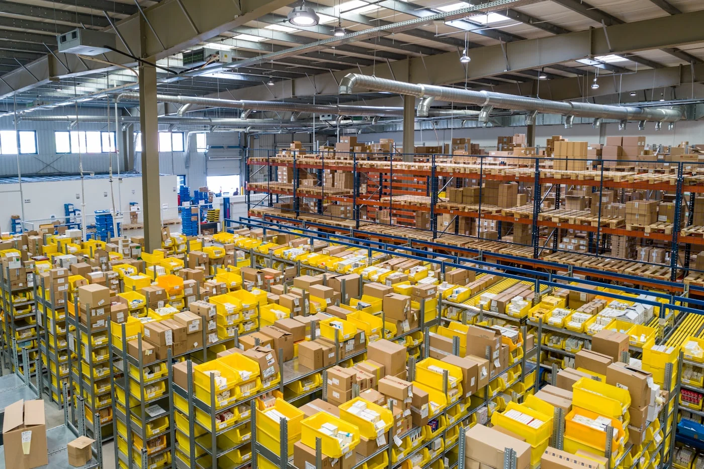
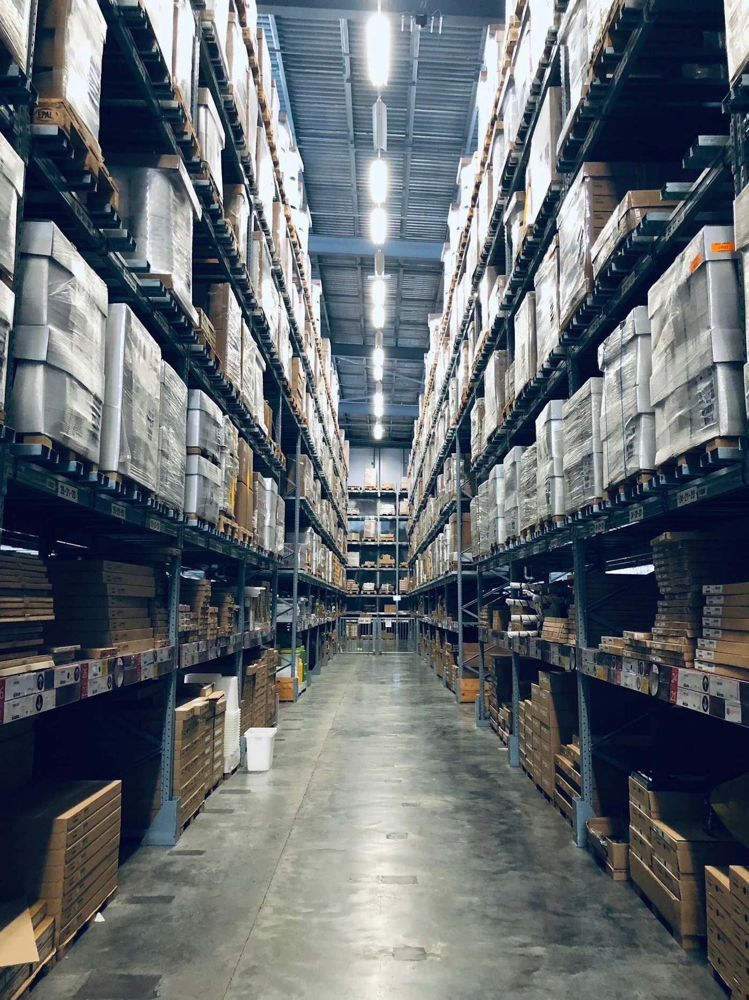

5 Prozesse, die Logistikunternehmen sofort mit KI automatisieren können

Die Realität in der Logistik
Ein typischer Tag in einem mittelständischen Logistikunternehmen: Dutzende E-Mails mit Transportanfragen, Lieferscheine die manuell erfasst werden müssen, Angebote die kalkuliert und verschickt werden, interne Rückfragen die weitergeleitet werden müssen. Diese administrativen Prozesse binden wertvolle Arbeitszeit, die für strategische Aufgaben fehlt.
Die gute Nachricht: KI Automatisierung in der Logistik ist heute keine Zukunftsmusik mehr. Viele dieser Prozesse lassen sich bereits mit bestehender Technologie automatisieren – pragmatisch, kostengünstig und ohne monatelange IT-Projekte.
1. Verarbeitung von Transportanfragen per E-Mail
Das Problem
Transportanfragen kommen per E-Mail in verschiedensten Formaten rein: Mal als strukturierte Tabelle, mal als Fließtext, mal als Anhang. Jemand muss diese Mails lesen, die relevanten Informationen extrahieren (Abholadresse, Zieladresse, Gewicht, Volumen, Zeitfenster) und in das System übertragen.
Die KI-Lösung
Ein KI-System liest eingehende E-Mails automatisch, extrahiert die relevanten Daten (auch aus unstrukturierten Texten) und erstellt einen Datensatz im System. Bei Unklarheiten kann die KI gezielt nachfragen oder einen Mitarbeiter zur Überprüfung einbinden.
Der praktische Nutzen
- Zeit: Bis zu 80% Zeitersparnis bei der Anfragenbearbeitung
- Fehler: Deutlich weniger Übertragungsfehler
- Geschwindigkeit: Anfragen werden innerhalb von Minuten statt Stunden verarbeitet
2. Automatische Dokumentenverarbeitung
Das Problem
Lieferscheine, CMR-Frachtbriefe, Zollpapiere, Rechnungen – täglich stapeln sich Dokumente in verschiedenen Formaten. Diese müssen gelesen, die Daten erfasst und im System abgelegt werden. Ein zeitaufwändiger Prozess, der fehleranfällig ist.
Die KI-Lösung
Moderne Dokumentenautomatisierung für Speditionen nutzt OCR (Texterkennung) kombiniert mit KI-Modellen, die verstehen, welche Informationen relevant sind – unabhängig vom Layout des Dokuments. Die KI extrahiert automatisch alle wichtigen Daten und ordnet sie korrekt zu.
Der praktische Nutzen
- Skalierung: Hunderte Dokumente pro Tag verarbeiten ohne zusätzliches Personal
- Qualität: Konstant hohe Datenqualität durch standardisierte Erfassung
- Archivierung: Alle Dokumente digital durchsuchbar und sofort verfügbar

3. Angebots- und Kalkulationsprozesse
Das Problem
Jede Anfrage muss kalkuliert werden: Route prüfen, Fahrzeug auswählen, Kosten berechnen, Marge einrechnen, Angebot schreiben. Bei mehreren Anfragen pro Stunde wird das schnell zum Engpass.
Die KI-Lösung
Ein KI-System analysiert die Anfrage, prüft verfügbare Ressourcen, berechnet automatisch die Route, kalkuliert Kosten basierend auf historischen Daten und erstellt ein professionelles Angebot – in Sekunden statt Minuten. Bei Standardrouten kann das Angebot direkt versendet werden, bei komplexeren Anfragen wird ein Mitarbeiter zur Freigabe eingebunden.
Der praktische Nutzen
- Reaktionszeit: Angebote in Minuten statt Stunden oder Tagen
- Wettbewerbsvorteil: Schnellere Antworten erhöhen die Auftragschancen
- Kostenoptimierung: KI lernt aus historischen Daten und optimiert Kalkulationen
4. Intelligente Weiterleitung von Anfragen
Das Problem
Eine E-Mail landet im allgemeinen Postfach: Geht es um eine Nachlieferung? Eine Reklamation? Eine Standardanfrage? Oft muss jemand die Mail lesen und manuell an die richtige Abteilung oder den zuständigen Mitarbeiter weiterleiten. Das kostet Zeit und führt zu Verzögerungen.
Die KI-Lösung
Ein intelligentes System analysiert jede eingehende Nachricht, erkennt die Art der Anfrage (Auftrag, Frage, Beschwerde, Statusupdate) und leitet sie automatisch an die richtige Stelle weiter. Urgent-Anfragen werden priorisiert, Standardfragen werden direkt beantwortet.
Der praktische Nutzen
- Effizienz: Keine manuelle Triage mehr notwendig
- Schnelligkeit: Kunden bekommen schneller Antworten
- Priorisierung: Wichtige Anfragen werden nicht übersehen
5. Interne Wissens-KI für Mitarbeiter
Das Problem
"Wie war das nochmal mit den Zollpapieren für die Schweiz?" – "Wo finde ich die Kontaktdaten von Spediteur X?" – "Welche Dokumente brauchen wir für Gefahrguttransporte?" Täglich stellen Mitarbeiter Fragen, die irgendwo dokumentiert sind – nur findet niemand die Information schnell.
Die KI-Lösung
Eine interne KI, die auf den eigenen Unternehmensdaten trainiert ist: Handbücher, Prozessbeschreibungen, E-Mail-Verläufe, Kundendaten. Mitarbeiter können in natürlicher Sprache Fragen stellen und bekommen sofort präzise Antworten – inklusive Quellenangabe.
Der praktische Nutzen
- Onboarding: Neue Mitarbeiter werden schneller produktiv
- Wissen: Expertise bleibt im Unternehmen, auch wenn Mitarbeiter gehen
- Produktivität: Keine Zeit mehr für Suchen und Nachfragen
Wie sieht die Umsetzung konkret aus?
Workflow Automation in der Logistik muss nicht bedeuten, dass Sie Ihr komplettes IT-System austauschen. Die meisten Automationen lassen sich als zusätzliche Schicht über Ihre bestehenden Systeme legen:
- Bestehende E-Mail-Postfächer bleiben erhalten
- Ihre Dokumentenablage wird weiter genutzt
- Vorhandene Systeme (TMS, ERP) werden per Schnittstelle angebunden
- Mitarbeiter arbeiten weiter mit vertrauten Tools
Die KI arbeitet im Hintergrund, übernimmt repetitive Aufgaben und gibt Mitarbeitern mehr Zeit für wertschöpfende Tätigkeiten.
Was kostet so eine Automatisierung?
Die Kosten hängen vom Umfang ab. Eine einfache E-Mail-Automatisierung kann bereits ab wenigen Tausend Euro umgesetzt werden. Komplexere Systeme mit mehreren Automationen kosten im mittleren fünfstelligen Bereich – rechnen sich aber meist bereits nach wenigen Monaten durch eingesparte Arbeitszeit.
Wichtig: Sie müssen nicht alles auf einmal umsetzen. Starten Sie mit dem Prozess, der am meisten Zeit kostet oder die größten Probleme verursacht. Dann erweitern Sie Schritt für Schritt.
Fazit: KI Automatisierung ist keine Zukunftsmusik
Prozessautomatisierung für Logistikunternehmen ist heute praxistauglich und bezahlbar. Die Technologie ist verfügbar, die Umsetzung ist pragmatisch möglich – und der Wettbewerbsvorteil für Unternehmen, die jetzt starten, wird mit jedem Monat größer.
Die Frage ist nicht mehr "Ob", sondern "Wann" und "Welcher Prozess zuerst". Unternehmen, die jetzt beginnen, ihre administrativen Prozesse zu automatisieren, gewinnen Zeit, reduzieren Fehler und schaffen Kapazität für Wachstum.
Welche Prozesse lassen sich in Ihrem Unternehmen automatisieren?
Wir analysieren gemeinsam Ihre Arbeitsabläufe und zeigen Ihnen konkret, wo KI Automatisierung Zeit und Kosten spart – ohne IT-Ballast, ohne leere Versprechen.
Potenzialanalyse anfragen